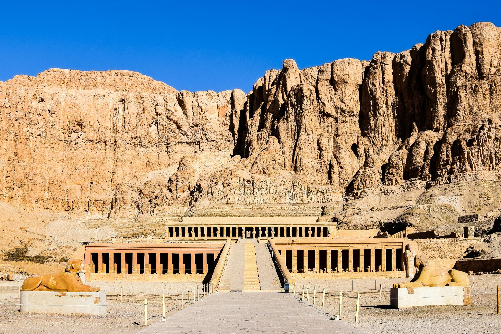
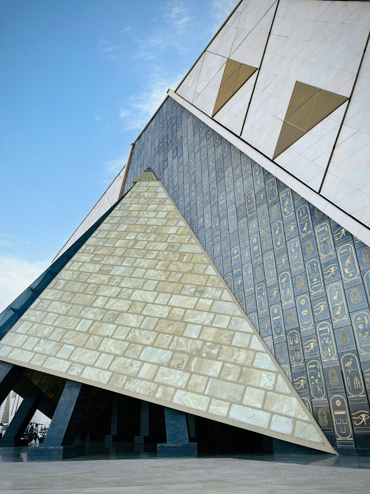

The Abu Simbel Temple, located south of Aswan in Egypt, is considered one of the greatest monuments
of Pharaoh
Ramesses II. It is entirely carved into the mountain and is famous for the unique phenomenon of the
sun
aligning on the "Holy of Holies" (Sanctuary) on February 22nd and October 22nd.
Hatshepsut Temple

The Mortuary Temple of Queen Hatshepsut
The Mortuary Temple of Hatshepsut, located at Deir el-Bahari, Luxor, is a masterpiece of ancient
Egyptian
architecture designed by Senemut for the 18th Dynasty female Pharaoh Hatshepsut.
Grand Egyptian Museum

The Grand Egyptian Museum
The Grand Egyptian Museum (GEM), located near the Giza Pyramids, is the world's largest museum
dedicated to a
single civilization. Housing over 100,000 artifacts, it features the full Tutankhamun collection, a
grand
staircase, and modern conservation labs.
The Great Pyramid of Giza
The Great Pyramid of Giza
The oldest and largest of the three pyramids in Giza,built for thr Pharaoh Khufu around 2560 BCE, it is the only one of the Seven Wonders of the Ancient World that is still largely intact.
The pyramid is aligned with extraordinary precision to true north.It was built using approximately 2.3 million stone blocks.For over 3,800 years,it was the tallest man-made structure in the world.
Dendera Temple Complex
Dendera Temple Complex
Located about 60 km north of Luxor,it is one of the best-preserved temple complexes in Egypt.
The main temple is dedicated to Hathor.The temple is renowned for its spectacular astronomical ceiling,which still retains its original vibrant colors.
Tomb of Tutankhamun
Tomb of Tutankhamun
Discovered in 1922 by British archaeologist Howard Carter in the Valley of the Kings.It is famous because it was found nearly intact,filled with extraordinary treasures.
Unlike mummies which are in museums,King Tut's mummy is still housed inside his tomb in a climate-controlled glass case.